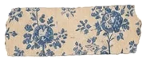

Class Teacher / Primary Science Teacher
Stafford Sri Lankan School Doha Doha, Qatar
- Develop engaging lesson plans and teaching materials aligned with the primary school science curriculum.
- Conduct hands-on experiments and demonstrations to help students understand scientific concepts.
- Create a positive, inclusive learning environment where students feel encouraged to ask questions and explore ideas.
- Assess understanding through quizzes, tests and projects.
- Communicate with parents about their child’s progress and address concerns.
- Take part in professional development to stay current with best practice in science education.
- Collaborate with colleagues on cross-curricular activities that integrate STEM learning.